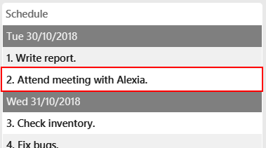
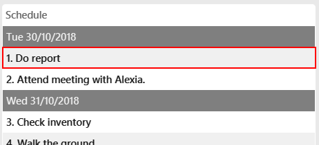

By: W12-3 Since: Aug 2018 Licence: MIT
- 1. Introduction
- 2. Quick Start
- 3. Command Summary
- 4. Features
- 4.1. Viewing help :
help - 4.2. Adding a person:
add - 4.3. Listing all persons :
list - 4.4. Editing a person :
edit - 4.5. Finding persons by attribute :
find - 4.6. Selecting a person :
delete - 4.7. Selecting a person :
select - 4.8. Listing entered commands :
history - 4.9. Undoing previous command :
undo - 4.10. Redoing the previously undone command :
redo - 4.11. Backing up all data :
backup - 4.12. Restore data from backup :
restore - 4.13. Exports the address book to a directory :
export - 4.14. Imports the address book from a directory :
import - 4.15. Clearing all entries :
clear - 4.16. Encrypting data files :
password - 4.17. Email contacts :
mail - 4.18. Schedule :
schedule - 4.19. Text prediction
- 4.20. Custom XML path
- 4.21. Exiting the program :
exit - 4.22. Saving the data
- 4.1. Viewing help :
- 5. FAQ
- Appendix A: Format of an exported CSV file
1. Introduction
CorpPro is optimised and made for corporate users like you. It helps you to store essential and critical information of each contact and boasts a friendly user interface for your efficiency. Text prediction and an ability to approximate word search enables you higher productivity when you need information fast. It features tagging, backup and restore system feature for you to better organise your contacts. Last but not least, it features a secured encryption functionality so you can secure all your confidential information.
2. Quick Start
-
Ensure you have Java version
9or later installed in your Computer. -
Download the latest
CorpPro.jarhere. -
Copy the file to the folder you want to use as the home folder for CorpPro.
-
Double-click the file to start the app. The app should appear in a few seconds.

-
Type the command in the command box and press Enter to execute it.
e.g. typinghelpand pressing Enter will open the help window. -
Some example commands you can try:
-
list: lists all contacts -
addn/John Doe p/98765432 e/johnd@example.com a/John street, block 123, #01-01: adds a contact namedJohn Doeto the address book -
delete3: deletes the 3rd contact shown in the current list -
exit: exits CorpPro
-
-
Refer to Section 4, “Features” for details of each command.
3. Command Summary
This section shows you usage example(s) of each command. For detailed explanations refer to Section 4, “Features”.
-
Add
add n/NAME p/PHONE_NUMBER e/EMAIL a/ADDRESS [r/POSITION] [k/KPI] [d/NOTE] [t/TAG [PRIORITY]]…
e.g.add n/James Ho p/22224444 e/jamesho@example.com a/123, Clementi Rd, 1234665 r/Boss k/4.5 d/James is a good friend t/friend t/colleague 2 -
Clear :
clear -
Delete :
delete INDEX
e.g.delete 3 -
Edit :
edit INDEX [n/NAME] [p/PHONE] [e/EMAIL] [a/ADDRESS] [r/POSITION] [k/KPI] [d/NOTE] [t/TAG [PRIORITY]]…
e.g.edit 2 n/James Lee e/jameslee@example.comoredit all/ t/owesMoney -
Find :
find n/ KEYWORD [MORE_KEYWORDS]
e.g.find n/James Jake -
List :
list -
Help :
help -
Select :
select INDEX
e.g.select 2orselect 1 - 3, 5 - 7 -
History :
history -
Undo :
undo -
Redo :
redo -
Backup :
backup -
Restore :
restore-
List snapshots:
restore-snapshots -
Restore chosen snapshots:
restore 1
-
-
Export :
export [d/ OUTPUT_PATH] [f/ NAME_OF_FILE] -
Import :
import d/ TARGET_PATH f/ NAME_OF_FILE -
Password :
password -
Schedule :
-
Add :
schedule-add d/DATE a/ACTIVITY
e.g.schedule-add d/30/10/2018 a/Attend Meeting. -
Edit :
schedule-edit INDEX a/ACTIVITY
e.g.schedule-edit 1 a/Attend Meeting with Alex. -
Delete :
schedule-delete INDEX
e.g.schedule-delete 1
-
-
Email :
mail
e.g.mail all/ormail t/TAG
4. Features
Command Format
-
Words in
UPPER_CASEare the parameters to be supplied by the user e.g. inadd n/NAME,NAMEis a parameter which can be used asadd n/John Doe. -
Items in square brackets are optional e.g
n/NAME [t/TAG]can be used asn/John Doe t/friendor asn/John Doe. -
Items with
… after them can be used multiple times including zero times e.g.[t/TAG]…can be used ast/friend,t/friend t/familyetc. -
Parameters can be in any order e.g. if the command specifies
n/NAME p/PHONE_NUMBER,p/PHONE_NUMBER n/NAMEis also acceptable.
4.1. Viewing help : help
Opens the User Guide window.
Format: help
4.2. Adding a person: add
Adds a contact to the address book
Format: add n/NAME p/PHONE_NUMBER e/EMAIL a/ADDRESS [r/POSITION] [k/KPI] [d/NOTE] [t/TAG [PRIORITY]]…
| KPI refers to Key Performance Index. |
| KPI scores should be a number from 0 - 5. |
| A person can have any number of tags (including 0). Priorities, high(2) or medium(1), can be added after the tag. |
Examples:
-
add n/John Doe p/98765432 e/johnd@nus.com a/311, Clementi Ave 2, #02-25 r/Secretary k/4.99 d/John is forgetful t/Accounting t/To Liase 2 -
add n/Betsy Crowe t/same office e/betsycrowe@microhard.com a/Microhard p/1234567 r/CEO t/boss
4.3. Listing all persons : list
Displays a list of persons in your address book.
Format: list or list t/TAG or list k/KPI
-
t/TAGflag can be specified with a tag to list all persons belonging to that tag. -
k/KPIflag can be specified with a KPI value to list all persons with that value. -
If no flags are specified, all persons are listed by default.
Example:
-
You can input
list t/HumanResourceto display all persons withHumanResourcetag in your address book.
4.4. Editing a person : edit
Edits an existing person in the address book.
Format: edit INDEX [n/NAME] [p/PHONE] [e/EMAIL] [a/ADDRESS] [r/POSITION] [k/KPI] [d/NOTE] [t/TAG [PRIORITY]]…
Examples:
-
edit 1 p/91234567 e/johndoe@nus.com
Edits the phone number and email address of the 1st person to be91234567andjohndoe@nus.comrespectively. -
edit 2 n/Betsy Crower r/ t/
Edits the name of the 2nd person to beBetsy Crowerand clears current position and all existing tags. -
edit all/ t/HR k/1.0
Replaces all listed persons' tag to beHRand edits their KPI to be1.0.
4.5. Finding persons by attribute : find
Finds persons whose names contain any of the given keywords.
Format: find PREFIX KEYWORD [MORE_KEYWORDS]
Examples:
-
find n/John
DisplaysjohnandJohn Doe -
find n/Betsy Tim John
Displays any person having namesBetsy,Tim, orJohn -
find e/example@domain.com
Displays any person having the emailexample@domain.com -
find a/jurong west ave
Displays any person who lives injurong,west,ave.
To better your experience with search, you should search for specific keywords to get to your results faster. Words such as Jurong would yield closer results compared to Jurong West Ave
|
-
find k/4.0
Displays any person who has a KPI of4.0 -
find d/John is forgetful
Displays any person who has a note containingJohn is forgetful -
find t/tester
Displays any person who is tagged astester -
find n/John Betsy r/secretary a/jurong west ave
Displays any person having namesJohnandBetsywho is asecretaryand lives injurong west ave
4.5.1. Search guessing
This feature will also display actual Keywords matched and Keywords guessed to give you a good indicator of which results were guessed.
From the above results we can see that Bernicc yields Keywords guessed: {Bernice} whereas Alex yields Keywords matched: {Alex}
Examples:
-
find p/9123
Displays any person having the phone number similar to9123eg.91231231,91231234, and so on.
| To narrow down your searches, try to be more specific in the phone number you wish to search for. |
4.6. Selecting a person : delete
Deletes a single or multiple contacts identified by their index number in the contacts list displayed on the left.
Format: delete INDEX or delete START_INDEX - END_INDEX
Examples:
-
list
delete 2
Deletes the 2nd contact in the address book. -
list
delete 1 - 3
Deletes the 1st to the 3rd contact in the address book. -
list
delete 1 - 3, 6 - 9
Deletes the 1st to the 3rd contact and 6th to the 9th contact in the address book. -
find n/Betsy
delete 1
Deletes the 1st contact in the results of thefindcommand.
4.7. Selecting a person : select
Selects a single or multiple contacts identified by their index number in the contacts list displayed on the left.
Format: select INDEX or select START_INDEX - END_INDEX
Examples:
-
list
select 2
Selects the 2nd contact in the address book. -
list
select 1 - 3
Selects the 1st to the 3rd contact in the address book. -
list
select 1 - 3, 6 - 9
Selects the 1st to the 3rd contact and 6th to the 9th contact in the address book. -
find n/Betsy
select 1
Selects the 1st contact in the results of thefindcommand.
4.8. Listing entered commands : history
Lists all the commands that you have entered in reverse chronological order.
Format: history
|
Pressing the ↑ and ↓ arrows will display the previous and next input respectively in the command box. |
4.9. Undoing previous command : undo
Restores the address book to the state before the previous undoable command was executed.
Format: undo
|
Undoable commands: those commands that modify the address book’s content ( |
Examples:
-
delete 1
list
undo(reverses thedelete 1command) -
select 1
list
undo
Theundocommand fails as there are no undoable commands executed previously. -
delete 1
clear
undo(reverses theclearcommand)
undo(reverses thedelete 1command)
4.10. Redoing the previously undone command : redo
Reverses the most recent undo command.
Format: redo
Examples:
-
delete 1
undo(reverses thedelete 1command)
redo(reapplies thedelete 1command) -
delete 1
redo
Theredocommand fails as there are noundocommands executed previously. -
delete 1
clear
undo(reverses theclearcommand)
undo(reverses thedelete 1command)
redo(reapplies thedelete 1command)
redo(reapplies theclearcommand)
4.11. Backing up all data : backup
The backup feature allows you to backup your address book and save the state for future restoration.
Format: backup
4.12. Restore data from backup : restore
The restore feature allows you to revert your address book back to a specific state in time (provided you backed up the state).
To list out all the available backups from latest to earliest:
Format: restore-snapshots
To restore your address book to the snapshot denoted by the INDEX,
Format: restore INDEX
4.13. Exports the address book to a directory : export
You can export your address book contacts into a CSV file into any existing directory.
Format: export [d/ OUTPUT_PATH] [f/ NAME_OF_FILE]
Refer to Appendix A, Format of an exported CSV file for details of an exported CSV file.
4.14. Imports the address book from a directory : import
You can import a CSV file and append it to your current address book.
Format: import d/ TARGET_PATH f/ NAME_OF_FILE
4.15. Clearing all entries : clear
Clears all entries from the address book.
Format: clear
4.16. Encrypting data files : password
Encrypts the data file with your password. All commands will be disabled during encryption, your data will be safely protected.
Format: password YOURPASSWORD
You can use the same command to decrypt the file, just hit password and your correct password.
|
4.16.1. Safe analogy

|
This feature does not actually store passwords. You will have to secure it with a password again after decryption to secure it. Passwords can only be alpha-numeric. |
Treat this feature as if it is a safe, once you have locked it, you have to remember the password in order to unlock it again.
And once you have unlocked it, you are free to set a new password.
Examples:
-
password helloworld
Locks address book with a password string and clears all data.
Entering password helloworld again unlocks the address book and restores all data.
|
4.17. Email contacts : mail
Opens your system’s default email application with specified contacts as recipients.
Format: mail all/ or mail t/TAG or mail
-
all/flag can be specified to open the email application with all contacts as recipients. -
t/TAGflag can be specified with a tag to open the email applications with all contacts belonging to that tag as recipients. -
If no flags are specified, contacts selected with
selectcommand are chosen as recipients.
Examples:
-
mail all/
opens your email application with all contacts as recipients. -
mail t/accountant
opens your email application with contacts tagged withaccountantas recipients. -
select 3
mail
opens your email application with person (3rd person in the list panel) as recipient.
4.18. Schedule : schedule
The Schedule feature helps you remember important activities by listing out important events and dates!
To add an activity to your schedule:
Format: schedule-add d/DATE a/ACTIVITY
-
Example:
schedule-add d/30/10/2018 a/Attend meeting with Alex.
Adds activity "Attend meeting with Alex." on "30/10/2018" to your schedule:
To edit an activity from your schedule:
Format: schedule-edit INDEX a/ACTIVITY
-
Example:
schedule-edit 2 a/Attend meeting with Alexia.
To edit the following activity "Attend meeting." at index2:
to "Attend meeting with Alexia.":

To delete an activity from your schedule:
Format: schedule-delete INDEX
-
Example:
schedule-delete 1
Deletes the following activity, "Do report", at index1in your schedule:
4.19. Text prediction
Text prediction feature allows you to complete your command faster with less typing.
Invoke this feature by pressing the Tab key on the keyboard.
You can invoke this feature on most command keywords and arguments:
-
Command keywords (
mail,add,find, etc.) . -
Flag arguments (
n/,a/,t/, etc.) .
For example, given an address book consisting of a contact with the name Alex Yeoh:
Typing m in the box and pressing Tab will auto complete to the mail command. Then, typing mail n/A and pressing Tab will auto complete to mail n/Alex Yeoh for you.
List of commands and it’s arguments prefix supported:
|
4.20. Custom XML path
All addressbook data is stored in addressbook.xml file located in data/ folder in the same directory as your jar file. To change where you wish to save the data file to, edit in preferences.json.
4.21. Exiting the program : exit
Exits the program.
Format: exit
4.22. Saving the data
Address book data are saved in the hard disk automatically after any command that changes the data.
There is no need to save manually.
5. FAQ
Q: Oh no! I accidentally deleted an extremely important contact! How do i retrieve old information?
A: There are two ways in which you can retrieve old information.
Firstly, there is the undo/redo function in which you can undo a command.
Secondly, with the all new backup/restore feature, you can backup your address book at any time and restore it to that state whenever you want!.
Q: How do I transfer my data to another Computer?
A: Now with the export/import function, you can export your old contacts into a CSV file and move the file to the new computer so you can import contacts from it. (Remember to download CorpPro on the other computer though!)
Q: What happens if I forget my password?
A: Your Address book will not be recoverable. You will have to delete addressbook.xml.encrypted and choose a backup to restore from.
Q: Strange… sometimes the text prediction doesn’t seem to work?
A: All command keywords are supported by text prediction. However, some command’s arguments are not supported. Check Section 4.19, “Text prediction” for more details.
Appendix A: Format of an exported CSV file
For more information about CSV files, you can refer to CSV file
When an address book is exported, it will be exported into a CSV file which can be read by excel or spreadsheet applications.
Each row refers to a person.
Each column refers to a separate field of the person.

Figure 1. Sample of a CSV file.
If a compulsory field is left blank, the address book will not allow the CSV file to be imported.